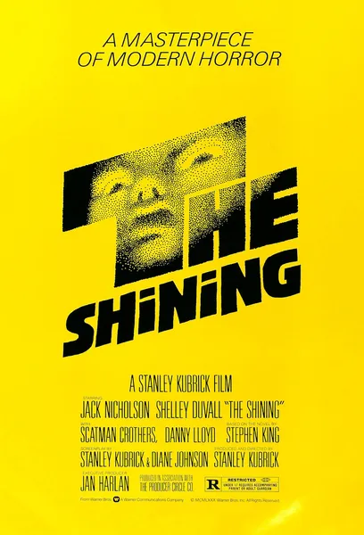
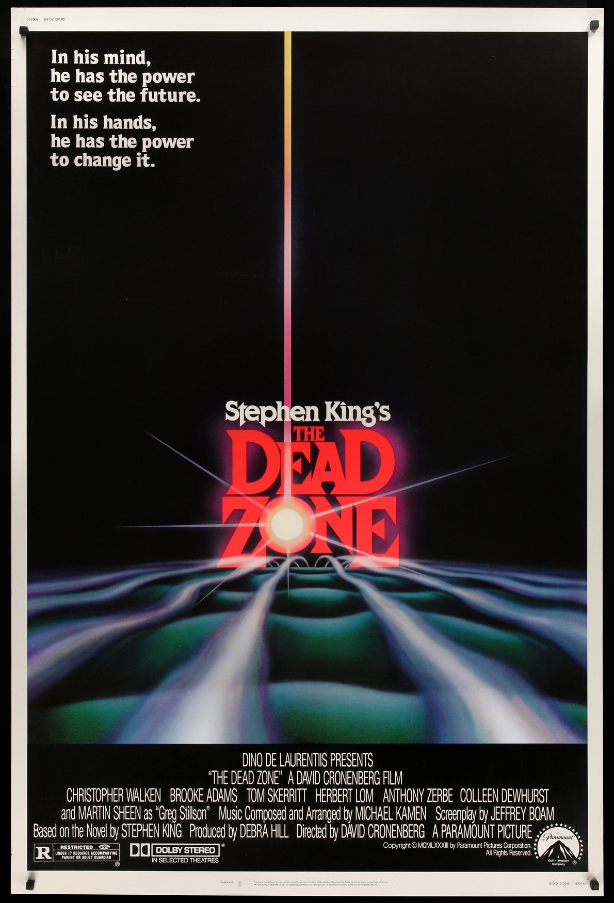
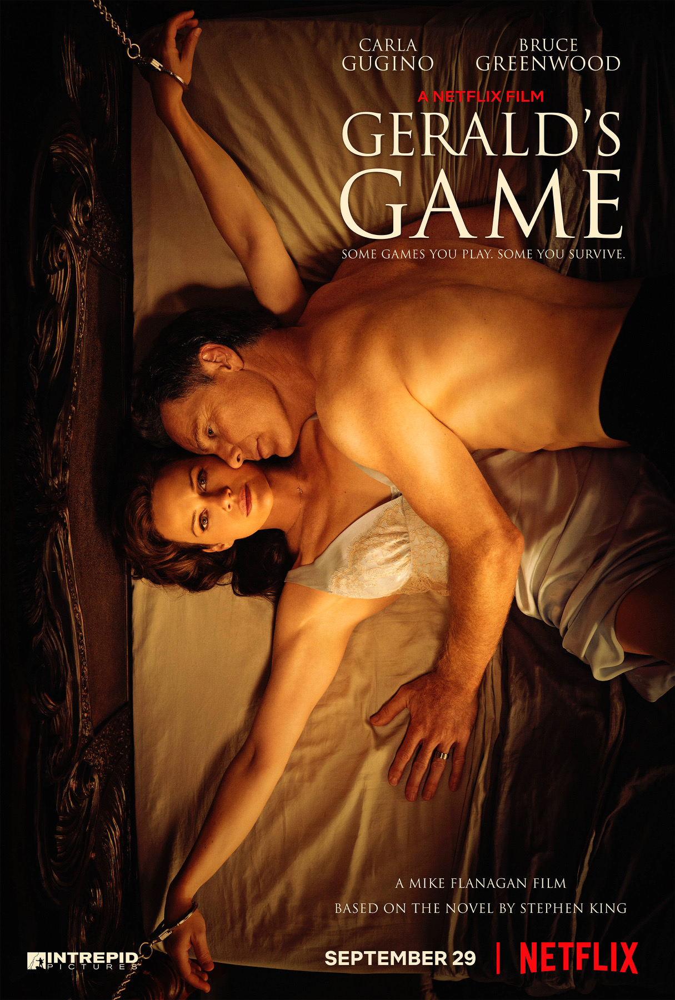

Κυκλοφορίας


Man
Glaser
Redemption
Claiborne


| Αφίσα | Τίτλος | Ημερομηνία Κυκλοφορίας |
Σκηνοθέτης | IMDB |
|---|---|---|---|---|
|
Carrie | 1976 | Brian De Palma | Πάτα εδώ! |
|  | The Shining | 1980 | Stanley Kubrick | Πάτα εδώ! |
| Creepshow | 1980 | George A. Romero | Πάτα εδώ! | |
| Cujo | 1983 | Lewis Teague | Πάτα εδώ! | |
|  | The Dead Zone | 1983 | David Croneenberg | Πάτα εδώ! |
| Christine | 1983 | John Carpenter | Πάτα εδώ! | |
|
Cat's Eye | 1985 | Lewis Teague | Πάτα εδώ! |
| Stand By Me | 1986 | Rob Reiner | Πάτα εδώ! | |
| The Running Man |
1987 | Paul Michael Glaser |
Πάτα εδώ! | |
| Misery | 1990 | Rob Reiner | Πάτα εδώ! | |
| The Shawshank Redemption |
1994 | Frank Darabond | Πάτα εδώ! | |
| Dolores Claiborne |
1995 | Taylor Hackford | Πάτα εδώ! | |
| The Green Mile | 1999 | Frank Darabond | Πάτα εδώ! | |
| 1408 | 2007 | Mikael Håfström | Πάτα εδώ! | |
| The Mist | 2007 | Frank Darabond | Πάτα εδώ! | |
|
It | 2017 | Andy Muschietti | Πάτα εδώ! |
|  | Gerald's Game | 2017 | Mike Flanagan | Πάτα εδώ! |
| 1922 | 2017 | Zak Hilditch | Πάτα εδώ! | |
|
It Chapter Two | 2019 | Andy Muschietti | Πάτα εδώ! |
|
Doctor Sleep | 2019 | Mike Flanagan | Πάτα εδώ! |
It (2017) - $701.7 εκατομμύρια παγκοσμίως
It: Chapter Two (2019) - $473 εκατομμύρια παγκοσμίως
The Green Mile (1999) - $286.8 εκατομμύρια παγκοσμίως
Ο βασιλιάς του Φόβου δεν είναι ούτε αρνητικά, αλλά ούτε και θετικά, προϊδεασμένος για την κινηματογραφική βιομηχανία. Έχει δεχθεί πολλαπλές φορές (όπως φαίνεται από τον παραπάνω πίνακα) να μεταβούν τα δημιουργήματά του από το χαρτί στην μεγάλη οθόνη, με διαφορετικά ονόματα να κρατάνε την σκυτάλη κάθε φορά. Η ταινία που έχει γνωρίσει την μεγαλύτερή του αποδοκιμασία δεν είναι άλλη από το The Shining του Stanley Kubrick, μία ταινία που θεωρείται εως και σήμερα ένα από τα μεγαλύτερα κλασικά δημιουργήματα του κινηματογράφου του τρόμου. Ο King έχει σχολιάσει χαρακτηριστικά:
"Έχω αληθινό πρόβλημα με την ταινία 'The Shining' [...] Ο Stanley Kubrick μου είχε πει "Εη Stephen, δεν συμφωνείς ότι όλες οι ιστορίες με φαντάσματα είναι εκ φύσεως αισιόδοξες;" "Τι εννοείς;", τον ρωτάω. "Εαν υπάρχουν φαντάσματα, αυτό σημαίνει ότι οι άνθρωποι έχουμε ζωή μετά τον θάνατο, και αυτό είναι εκ φύσεως αισιόδοξο." "Και αυτό (που βιώνουν τα φαντάσματα) δεν είναι η Κόλαση;", τον ρωτάω. "Δεν πιστεύω στην Κόλαση", μου απάντησε. [...] Κάποιοι από εμάς πιστεύουμε στην αληθινή Κόλαση, και μάλιστα αυτή είναι αυτό που βιώνουν όσα φαντάσματα "επιβιώνουν". [...] Πάντα έβλεπα τους χαρακτήρες (του The Shining) ως ζεστούς ανθρώπους, που απειλούνταν από εξωτερικές δυνάμεις, από φαντάσματα. [...] Στην ταινία (οι χαρακτήρες) είναι εξαιρετικά παγωμένοι. Ο Stanley Kubrick θεώρησε ότι το στοιχειό προερχόταν από (τον ίδιο) τον Jack Torrace. [...] Η μεγαλύτερη διαφορά στην αντιλήψή μου και σε αυτή του Stanley Kubrick ήταν η εξής: στο βιβλίο μου, το ξενοδοχείο καίγεται. Στην ταινία του Kubrick, το ξενοδοχείο παγώνει..."
Απόσπασμα από συνέντεξη. Για να παρακολουθήσετε ολόκληρο το βίντεο, πατήστε εδώ.
Αντίθετα με την επικριτικότητα απέναντι στην ταινία του Kubrick, ο συγγραφέας εχει εκφράσει μόνο θερμά συναισθήματα απέναντι στην ταινία του Rob Reiner Stand By Me. Λέγεται ότι αφού είχε δει μία πρόημη προβολή της ταινίας, ο King πλησιάζοντας τον σκηνοθέτη είχε πει πως αυτή η προσπάθεια ήταν "η καλύτερη ταινία που έχει δημιουργηθεί από δικό μου κείμενο [...]". Συνέχισε υποστηρίζοντας ότι ο Reiner "πραγματικά ζωντάνεψε την ιστορία". Ο συγγραφέας έμεινε πραγματικά εντυπωσιασμένος από την δουλειά του σκηνοθέτη, δίνοντάς του τις ευλογίες του για την σκηνοθετική του επιχείρηση.